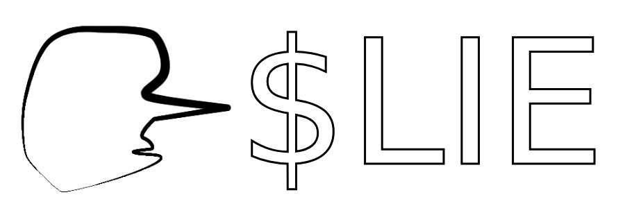
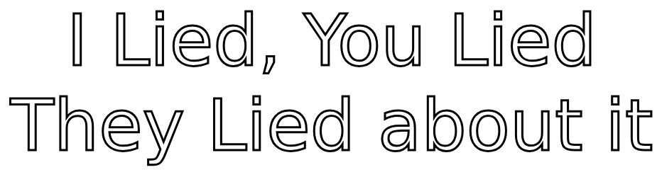

Intro

$LIE is a token that embodies the dark truth behind lies
those told, untold, and denied. It symbolizes the hidden layers of deception in everyday life, creating a narrative that challenges perceptions of honesty and trust. With privacy and subtlety at its core, $Lie explores the fine line between truth and fiction, offering a space where the shadows of unspoken truths come to light.
Goal

The goal of $LIE is to unveil the hidden truths behind the lies we tell and encounter daily. By embracing the concept of deception, $LIE aims to spark conversations about trust, privacy, and the complexity of human interactions. Through its unique narrative, $LIE seeks to challenge perceptions, provoke thought, and create a platform where the untold stories of lies can be explored and shared.
About
I choose to remain anonymous because $LIE is not about me; it’s about the message it carries. Just like lies hide identities and intentions, my anonymity allows the focus to stay on the token’s purpose: exploring the hidden truths and untold stories we all encounter. Let $LIE speak for itself, unbound by who I am.
Contact
RoadMap
I'm proud of you guys. Stay strong. there is nothing to hide. I am one of you.